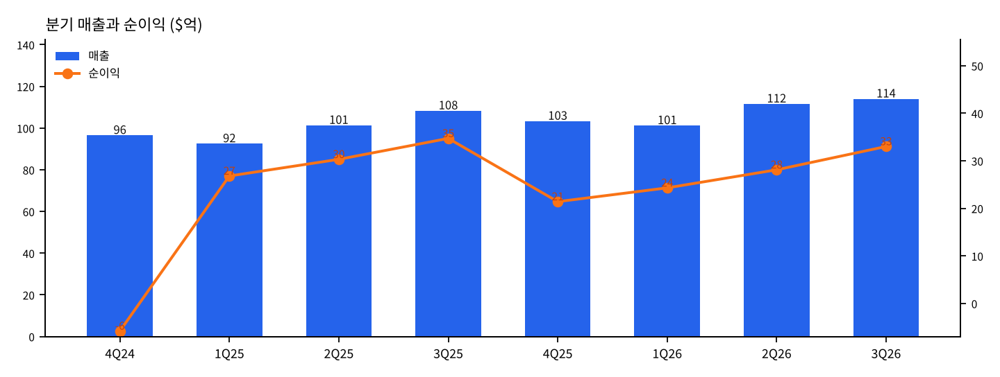
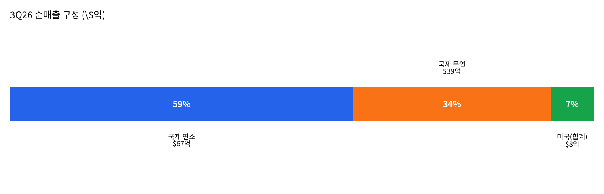
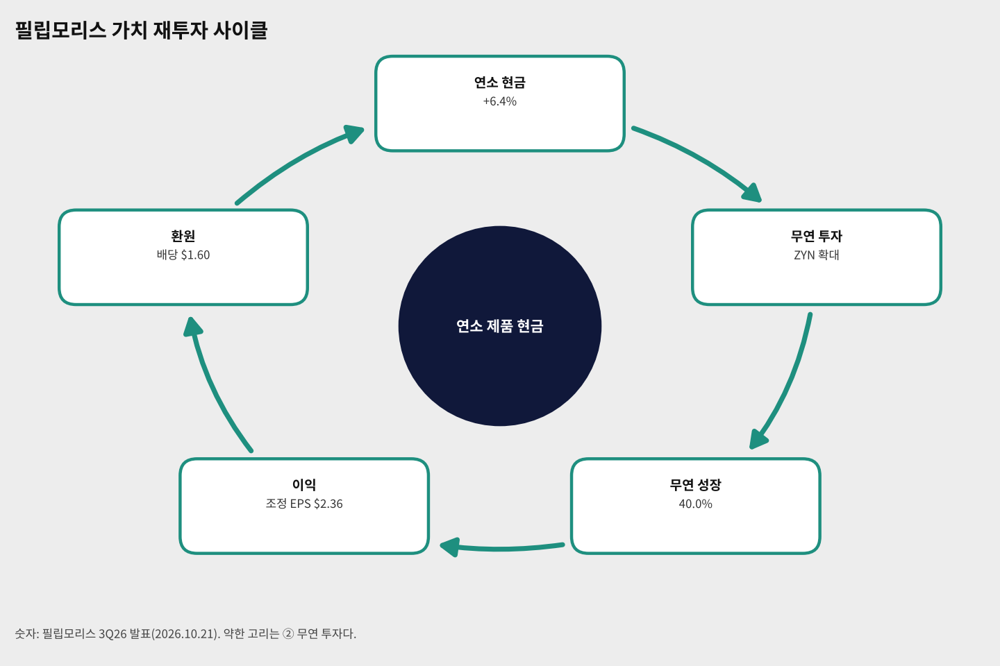

필립모리스는 전 세계 110개 시장에서 담배와 무연 제품(IQOS·ZYN·VEEV)을 판매한다. 무연 비중이 40%를 넘었고 미국 ZYN 매출이 빠르게 늘고 있다.
| 항목 | 내용 |
|---|---|
| 종목 | Philip Morris International (PM) · NYSE · 소비재(담배) · 미국 코네티컷 스탬퍼드 |
| 멀티플 | PER·P/S는 08·09 항목 표 참조 |
| 최근 분기(3Q26) | 순매출 $114.4억, 영업이익 $48.7억, 조정 EPS $2.36 |
| 가이던스(FY26) | 유기 매출 +5~7%, 조정 EPS $8.29~8.44 |
| 배당 | 분기 $1.60(+8.8%) |
| 직책 | 인물 | 역할·특징 |
|---|---|---|
| CEO | 야체크 올차크(Jacek Olczak) | '무연 성장과 연소 제품의 탄력'으로 6년 연속 성장 목표 |
| CFO | 에마뉘엘 바보(Emmanuel Babeau) | 통화 영향 반영 가이던스 설명(확인 필요) |
경영 스타일: '무연 전환 + 투자 가속'. 하반기에 미국 ZYN 등에 투자를 늘리면서도 연간 가이던스를 통화 효과만 반영해 조정했다.
IQOS 가열식 담배(HTU), ZYN 니코틴 파우치, VEEV 전자담배.
무연 제품 매출 비중을 계속 키워 연소 제품 감소를 상쇄한다.
다음 실적발표는 세 가지 질문에 답하는 자리다.
1. 미국 ZYN 투자가 이익을 얼마나 누르나?
2. 연소 제품의 가격 효과가 이어지나?
3. 가이던스 조정 EPS $8.29~8.44가 유지되나?
한 줄 판정 규칙: 첫 질문(ZYN)과 둘째 질문(가격)이 모두 이어지면 약한 고리(미국 투자 부담)가 풀린다.
일정: 4Q26 실적 발표는 트레이딩뷰 기준 2027.02.11(확인 필요).
| 분기 | 매출 | 순이익 | EPS | 조정 EPS | 특이 사항 |
|---|---|---|---|---|---|
| 4Q24 | $96.5억 | $-5.8억 | -0.37 | 1.55 | GAAP EPS 음수(일회성 비용) |
| 1Q25 | $92.5억 | $26.8억 | 1.72 | 1.69 | |
| 2Q25 | $101.3억 | $30.3억 | 1.95 | 1.91 | |
| 3Q25 | $108.3억 | $34.7억 | 2.23 | 2.24 | |
| 4Q25 | $103.3억 | $21.4억 | 1.37 | 1.70 | |
| 1Q26 | $101.2억 | $24.3억 | 1.56 | 1.96 | |
| 2Q26 | $111.6억 | $28.1억 | 1.80 | 2.20 | |
| 3Q26 | $114.0억 | $33.0억 | 2.12 | 2.37 | 조정 EPS $2.37(보도 기준 $2.36) |
3Q26 GAAP EPS $2.12(-4.9%), 조정 EPS $2.36(+5.4%)(회사 발표 2026.10.21). 트레이딩뷰 Reported는 $2.37이다. 4Q24 GAAP EPS는 음수. 매출·순이익·EPS(GAAP 희석)는 트레이딩뷰 스캐너, 조정 EPS는 트레이딩뷰 실적 페이지의 Reported 값이다. 분기 정렬은 오래된 분기→최신이다.

흐름 요약: 최근 분기 매출은 $114.0억로 전년 동기 $108.3억 대비 +5.3%, 순이익은 $33.0억(전년 $34.7억)다. 최근 4분기 GAAP EPS는 $6.85, 조정 EPS는 $8.23다.
| 지역·제품 | 내용 | 3Q26 순매출 | 비고 |
|---|---|---|---|
| 국제 연소 제품 | 말보로 등 담배 | $67.3억 | 가격 +8.9% |
| 국제 무연 제품 | IQOS·ZYN·VEEV | $38.7억 | +0.7% |
| 미국(합계, 내 계산) | 미국 무연·연소 | 약 $8.5억 | 총 $114.4억 − 국제 합 |

국제 사업이 순매출 대부분을 차지하고, 무연 제품은 전체의 40.0%다. 미국은 총액에서 국제 합계를 뺀 값(내 계산)이다.
필립모리스는 '담배 없는 미래를 만들어 무연 제품을 키우는 것'을 목표로 한다.
| 축 | 내용 |
|---|---|
| 무연 | 순매출의 40.0%, 110개 시장 |
| 미국 | ZYN 11개 변형 FDA 허가 |
| 환원 | 분기 배당 $1.60 |

| 이동평균 | 값 | 종가 대비 | 위치 |
|---|---|---|---|
| 5일선 | $195.75 | -1.5% | 종가 아래 |
| 20일선 | $200.75 | -4.0% | 종가 아래 |
| 50일선 | $196.90 | -2.1% | 종가 아래 |
| 100일선 | $192.48 | +0.1% | 종가 위 |
| 200일선 | $183.47 | +5.0% | 종가 위 |
52주 고가 $214.35(2026-10-30)·저가 $146.35(2025-12-04) 범위에서 종가 $192.73는 100일선, 200일선을 웃돌고 5일선, 20일선, 50일선은 밑돈다.
| 규칙 | 기준 | 현재 값 | 신호 |
|---|---|---|---|
| 장기 추세 필터 | 종가 vs 200일선 | $192.73 > $183.47 | 매수 |
| 중장기 교차 | 50일선 vs 200일선 | $196.90 > $183.47 | 매수 |
| 단기 교차 | 20일선 vs 50일선 | $200.75 > $196.90 | 매수 |
| 돈키언 채널 | 55일 고가 $214.35 / 저가 $181.01 | 중간값 $197.68 아래 | 매도 |
| 1개월 모멘텀 | 21거래일 수익률 | -3.6% (기준 $199.90) | 매도 |
| 3개월 모멘텀 | 63거래일 수익률 | +0.6% (기준 $191.52) | 매수 |
| 6개월 모멘텀 | 126거래일 수익률 | +2.2% (기준 $188.63) | 매수 |
| 12개월 모멘텀 | 252거래일 수익률 | +26.2% (기준 $152.76) | 매수 |
| 종합 (8개 평균) | +0.50 | 매수 |
해석: 매수 신호 6개(장기 추세 필터, 중장기 교차, 단기 교차, 3개월 모멘텀, 6개월 모멘텀, 12개월 모멘텀), 매도 신호 2개(돈키언 채널, 1개월 모멘텀). CTA 점수 +0.50(매수). 14일 ATR $5.29 (2.7%), 52주 고가 $214.35 · 저가 $146.35.
| 가격 | 기준 | 무엇이 바뀌나 |
|---|---|---|
| $214.35 | 55일 고가 | 돌파 시 채널 상단 갱신 |
| $199.90 | 1개월 모멘텀 기준가 | 종가가 이 가격 위면 1개월 신호 매수 |
| $197.68 | 돈키언 중간값 | 55일 채널 중간값 위/아래로 신호가 바뀜 |
| $191.52 | 3개월 모멘텀 기준가 | 종가가 이 가격 위면 3개월 신호 매수 |
| $188.63 | 6개월 모멘텀 기준가 | 종가가 이 가격 위면 6개월 신호 매수 |
| $183.47 | 200일선 | 종가가 이 선 위/아래인지로 장기 추세 신호가 바뀜 |
| $181.01 | 55일 저가 | 이탈 시 채널 하단 갱신 |
| $152.76 | 12개월 모멘텀 기준가 | 종가가 이 가격 위면 12개월 신호 매수 |
가격 수준은 신호가 바뀌는 기준선일 뿐 진입·청산 가격 제안이 아니다. 20일/50일 교차는 이동평균 자체가 움직여 단일 가격으로 표시하지 않았다. 일봉·주봉은 종가 기준 직접 계산(고저 데이터 미사용)이다.
| 악재 요인 | 내용 | 강도 |
|---|---|---|
| 미국 투자 부담 | 4Q 투자 확대로 영업이익 압력 | 중간 |
| 규제 | FDA 허가 의존 | 중간 |
| 통화 | 환율이 조정 EPS에 영향 | 참고 |
| 연소 감소 | 담배 출하 평탄 | 중간 |
| 티커 | 회사 | PER(TTM) | PEG | P/S | EPS 성장(YoY) |
|---|---|---|---|---|---|
| PM | 필립모리스 인터내셔널 | 28.1배 | 1.18 | 6.98배 | +24% |
| MO | 알트리아 | 15.7배 | – | 6.26배 | -8% |
| KO | 코카콜라 | 28.9배 | 2.37 | 8.28배 | +12% |
| PG | P&G | 25.7배 | – | 4.70배 | -3% |
비교 결론: 필립모리스 PER은 알트리아보다 높다. 조정 EPS 성장 기준으로 본다.
필립모리스는 FCF TTM $136억으로 배당($1.60 분기)과 부채 상환을 병행한다.
| 지표 | 값 | 출처 | 해석 |
|---|---|---|---|
| 현금·단기투자 | $67억 | 트레이딩뷰 스캐너(최근 분기) | |
| 총부채 | $476억 | 트레이딩뷰 스캐너(최근 분기) | |
| 순부채(부채−현금) | $409억 | 내 계산 | 현금 대비 부채 부담 |
| 잉여현금흐름(TTM) | $136억 | 트레이딩뷰 스캐너 | |
| TTM 매출 | $430억 | 트레이딩뷰 스캐너 |
| 기준 | 매출 | P/S | 비고 |
|---|---|---|---|
| 내 계산(종가 ÷ 최근 4분기 매출 합계) | $430.1억 | 6.98배 | 시총은 정렬용 데이터에서만 사용 |
| 동종(트레이딩뷰) | – | MO 6.26배 · KO 8.28배 · PG 4.70배 | 11.19 |
해석: P/S 7.05배는 알트리아(6.26배)보다 높다.
EBITDA는 영업활동의 현금 창출력을 보는 지표이고, PEG는 PER을 EPS 성장률로 나눈 값이다. EBITDA·FCF는 트레이딩뷰 TTM 값이다.
| 지표 | 값 | 산출 |
|---|---|---|
| EBITDA(TTM) | $183억 | 트레이딩뷰 스캐너 |
| EBITDA 마진 | 42.6% | EBITDA ÷ TTM 매출(내 계산) |
| FCF 마진 | 31.6% | FCF ÷ TTM 매출(내 계산) |
| PER(GAAP TTM) | 28.1배 | $192.73 ÷ $6.85 |
| PER(조정 TTM) | 23.4배 | $192.73 ÷ $8.23 |
| 방식 | PER | EPS 성장률 | PEG | 판정 |
|---|---|---|---|---|
| GAAP EPS (TTM $6.85) | 28.1배 | +24% ($5.53 → $6.85) | 1.18 | 기준 초과 |
| 조정 EPS (TTM $8.23) | 23.4배 | +11% ($7.39 → $8.23) | 2.06 | 기준 초과 |
판정: GAAP EPS 기준 PEG 1.18 → 1.0 초과 PEG 기준은 1.0 이하 투자 적격, 0.5 이하 적극 매수다. EPS 성장률은 최근 4분기 EPS 합계를 직전 4분기 합계와 비교한 값(내 계산)이고, 일회성 항목이 있으면 조정 EPS 행을 함께 본다.

필립모리스의 사이클은 연소 제품 현금 → 무연 투자 → 무연 성장 → 이익 → 환원이다.
| 고리 | 현재 숫자 | 고리 강도 | 약해지는 신호 |
|---|---|---|---|
| ① 연소 현금 | 연소 순매출 +6.4% | 강함 | 출하 감소 |
| ② 무연 투자 | 미국 ZYN 투자 확대 | 진행 중 | 이익 압력 |
| ③ 무연 성장 | 무연 비중 40.0% | 강함 | 경쟁 |
| ④ 이익 | 조정 EPS $2.36 | 보통 | 통화 |
| ⑤ 환원 | 분기 배당 $1.60 | 강함 | 투자 우선 |
사이클의 특징: 가장 약한 곳은 ② 무연 투자다. 4Q 투자 확대가 단기 이익을 누른다.